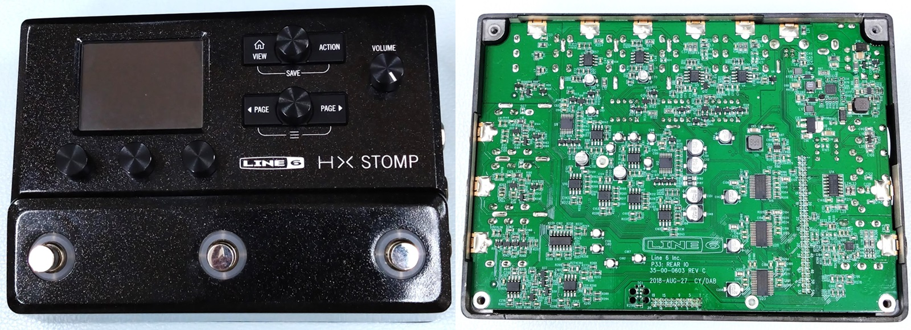

LINE 6 HX Stomp 分解・特性測定
2024年08月24日 カテゴリー：修理・改造・解析

ZOOM MS-50G+に引き続き、LINE 6 HX Stompを分解、特性測定しました。
▽基板画像
＜主なIC等＞
ADSP-21469: SHARC DSP 450MHz
LPC4350FET256: マイコン Arm Cortex-M4/M0 204 MHz
NT5TU64M16HG-AC: SDRAM
EMMC04G-M627: フラッシュメモリ
W9812G6JB-6I: SDRAM
W25Q80DVSNIG: フラッシュメモリ
AT88SC153: EEPROM
EA2-5NU: リレー
6N137: フォトカプラ
CS4272-CZZ: オーディオコーデック
OPA134UA、TL074C、NE5532: オペアンプ
MAX97220A: ヘッドフォンアンプ
MC14051B: アナログスイッチ
SN74HCT14: シュミット・トリガ入力インバータ
ADP5071: 昇圧・反転スイッチングレギュレータ
MP2314: 降圧スイッチングレギュレータ
CY8C4246AZI: マイコン ARM Cortex-M0 48MHz
ADSP-21469の演算能力はMS-50G+のTMS320C6745と同じくらいのようです。スペックが高めのLPCマイコンも搭載されており、何かしら処理を分担して行っていると思われます。
入力部には高価なシングルオペアンプOPA134UAがあり、アナログ部分へのこだわりが見受けられます。アナログスイッチMC14051Bと周辺の抵抗が入力インピーダンス切替に使われており、『ファズが先頭でオンの時に入力インピーダンスが下がる』といった設定にすることができます。また、リレーによるバイパスが可能で、電源オフ時にバイパス音が出ます。
▽バイパス音（DSP Bypass）
- 周波数特性 ※±1dBに拡大（DIRECT：測定に使用しているオーディオインターフェースUR22Cの入出力を直結）

ごくわずかですが、低音域・高音域のカットはMS-50G+より大きいです。
- 正弦波 約1kHz 330mVpp

HX Stompは歪率が低く、ノイズも測定限界に近いです。レイテンシーは、約1.5msでした。
＜実機比較＞
Scream 808とTS9実機とを比較しました。DRIVEとTONEを変化させています。
Scream 808では、7kHzあたりから高音域が下がった特性になっています。以前BiQuadフィルタで1次ローパスフィルターを再現した時と同じで、ナイキスト周波数（サンプリング周波数の1/2）に近づくにつれて下がっていく形です。これは意図的というより、デジタルフィルターの処理上やむを得ずこうなったのではないかと思います。
前述の高音域低下を除けば、正確に再現されているように見えます。しかしながら、コントロールの割合をみるとわかる通りパラメータの変化の仕方が違っており、特にTONEポットのWカーブは再現されていません。
さらに倍音について調べました。同じくらいの歪率になるよう入力音量を調整してあります。

通常対称クリッピングでは奇数次倍音が出やすいです。TS9では部品の誤差・個体差があるため、少しだけ非対称になり偶数次倍音も出ます。Scream 808は理想的なデータでクリッピングしていると思われ、完全な対称クリッピングとなり偶数次倍音が現れません。また、歪み始める音量が異なるので、ダイオードの閾値電圧も違っているようです。
SansAmp Bass Driver DI（以下BDDI）でのデータです。
設定：PRESENCE 0% DRIVE 0% BLEND 100% BASS 50% TREBLE 50%
自作BDDIの記事で報告した通り、本家BDDIはコンデンサの容量変化で特性がズレています。ZeroAmp Bass DIは自作BDDIに近く、コンデンサの容量変化までは再現されていないことがわかります。
US Double Nrm（Fender Twin Reverb） Preampのみでの周波数特性です。
Twin Reverbのトーンスタック部分だけでシミュレーションし比較しました。おおよそ同じ特性になっています。（2024年8月28日 Amp→Preampのデータに差し替え、記述変更）
Line 6 Helix 開発者インタビュー記事によると、開発時はモデリングと実機に違いがないように聞こえるかブラインドテストで確認しているそうです。しかしながら100%完璧なモデリングとは言えない部分もあるようなので、アンプ実機やアナログエフェクターの出番はまだまだあるのかなと思います。